Caso 017 · Barclay & Crousse · 2016 · museo de sitio
Un museo de una planta formado por tres barras paralelas este-oeste de tierra apisonada (sur técnica y ciega, centro de salas, norte de acogida y sala temporal), cosidas por dos espinas cubiertas norte-sur (oeste pública de 4 m, este de 3 m para salida y piezas). Entre barras quedan dos patios de 4 m, abrigados del viento y la arena del sur-suroeste.
Consigna A: las barras del boceto son muros y volúmenes tal cual, y las franjas libres, patios. No cuestiono la forma; resuelvo lo que la lectura literal deja abierto: la conexión entre barras (las dos espinas) y el comportamiento al sol (sección con tres alturas).
| Criterio | P1 peine N-S | P2 barras E-W + 2 espinas (elegido) |
|---|---|---|
| Programa | muchos cruces entre salas y servicios | recorrido en lazo; piezas y público separados |
| Clima | caras largas al SSW | muro sur ciego de 4 m, patios cerrados |
| Accesos | espina norte | entrada N, muelle E |
| Normativa | semienterrado: incumple la protección de restos | suelo a 0,00, cimentación superficial |
Hipótesis de demanda: baja 15.000 visitas/año, alta 80.000; elegida 40.000 (turismo de ruta y escolares en un yacimiento de paisaje protegido). Día punta 400 visitas, 90 simultáneas. Superficie útil interior 1.406 m² (encargo 600-1.800 m²; tipología 800-1.500 m²); exterior 2.210 m².
Público: plaza norte con pérgola, Recepción y tienda (158 m²), Sala temporal (234 m²), Espina oeste, Sala 1 Arqueología (198 m²), Sala 2 Antropología (198 m²), Galería este y salida. Aseos (13,2 + 13,2 + 13,6 m²) en el noroeste de la barra norte. Servicio: muelle de carga (27 m²) desde el patio de carga, Conservación y manipulación (58 m²), Depósito de piezas (84 m²), Administración (65 m²), Instalaciones (45 m²) y Basuras y limpieza (32 m²), todos en la barra sur, unidos por un pasillo de servicio de 2,5 m. Las basuras salen por el pasillo de servicio al muelle (paso de 1,6 m en el muro este) fuera de horario; las piezas viajan por muelle, depósito, pasillo y galería este, también fuera de horario público.
Exteriores: aparcamiento de 17 plazas (15 estándar de 2,5 m más 2 accesibles de 3,5 m junto a la entrada), 2 paradas de autobús de 12 m, calle de maniobra de 7 m conectada con el camino, plaza con pérgola de 34 x 3,6 m (5 pilares cada 8 m), patio de carga de 17 x 14 m con camino de servicio desde el este (dibujado desde el camino hasta el patio, con giro del furgón), caminos laterales de evacuación, patios con grava y árboles.
| Exigido | Propuesto | Cumple |
|---|---|---|
| Plantas, secciones, alzados, detalle, exteriores | P01-P02, S01-S04, D01, U01-U02, V01-V02 | Sí |
| Acceso, recepción y control | Recepción y tienda 158 m², mostrador, taquillas | Sí |
| Salas permanentes | 2 salas, 396 m² (4,4 m²/persona en hora punta) | Sí |
| Sala temporal / usos múltiples | 234 m², acceso independiente | Sí |
| Depósito y conservación, carga separada | 142 m² + muelle 27 m², patio de carga este | Sí |
| Administración | 65 m², 3 puestos | Sí |
| Aseos, tienda y servicios | 3 aseos (uno accesible), ventilación alta al patio norte | Sí |
| Instalaciones y mantenimiento | 45 m² + basuras 32 m², patinillo de 1 x 1 m | Sí |
| Superficie 600-1.800 m² | 1.406 m² | Sí |
| Altura máx. 7 m | 6,0 m (barra central) + equipos hasta 5,4 m | Sí |
| Retranqueo 5 m a lindes | edificio a 7-8 m del límite sur y oeste, 18 m al norte, 21 m al este | Sí |
| Cimentación superficial | zapata corrida y zócalo de hormigón | Sí |
| Volumen bajo, colores terrosos | una planta, tierra apisonada | Sí |
Desviación: la cota 0,00 sobre terreno de pendiente 3 % se resuelve con plataforma y talud sur de 1,5 m (1:2); no se excava bajo el terreno.
Muros portantes de tierra apisonada estabilizada de 0,45 m en ejes N-S x = 8, 12, 56 y 59; ejes E-W y = 7, 16, 20, 29, 33 y 42. Losas de hormigón de 0,40 m de canto: salvan 9 m (barras) con cuantía normal y apoyan en muros, sin pilares interiores en salas; la barra central (5,6 m de altura libre) lleva el clerestorio. Carga estimada de cubierta 5 kN/m² (peso propio 10 kN/m² a 0,40 m + grava y aislante) sobre 0,45 m de muro: 9 m x 5/2 = 22 kN/m, tensión < 0,1 MPa, muy inferior a los 1-2 MPa de la tierra estabilizada. Cimentación: zapata corrida superficial de 0,9 m de ancho con zócalo de hormigón de 0,5 m sobre grava, sin excavar más de 0,6 m por los posibles restos. Pilares solo en la pérgola (5 redondos de 0,25 m, luz 8 m). Juntas: no se proyectan juntas de dilatación dibujadas; la tierra trabaja con retracción mínima y el módulo máximo es de 51 m con muros transversales cada 12 m.
| Elemento | Material | Acabado |
|---|---|---|
| Muros exteriores e interiores portantes | tierra | tierra apisonada vista |
| Tabiques | bloque | enlucido |
| Solera | hormigón | losa de piedra (salas, recepción) y baldosa (aseos, administración) |
| Cubiertas | hormigón | grava clara sobre impermeabilización y aislante |
| Pérgola | madera | madera natural |
| Patinillo | hormigón | visto |
| Equipos y vehículos | metal / chapa | gris |
Muro: enlucido de barro y cal 3 cm, tierra apisonada 45 cm, enlucido interior 2 cm. Cubierta: grava clara 5 cm, impermeabilización 1 cm, aislante 8 cm, losa de hormigón 40 cm, con alero hacia fuera. Suelo: losa de piedra 3 cm, solera de hormigón 25 cm, grava compactada 20 cm, sobre zócalo de hormigón de 0,5 m en el pie del muro.
BWh: oscilación diaria moderada y sol alto: masa térmica de 45 cm de tierra con desfase de unas 10 horas, muros ciegos al sur y huecos del 10-15 %, cierre contra viento con arena (sur ciego, talud de 1,5 m), luz natural filtrada solo por el clerestorio norte con alero de 1,2 m. Los patios (4 m) quedan en sombra con sol de invierno (5,6 m de sombra de la barra central de 6,0 m) y con árboles para el sol de verano; no alojan piezas ni recorridos protegidos.
Todo a nivel (cota 0,00), sin escaleras ni desniveles: itinerario accesible de 1,80 m desde las 2 plazas accesibles (3,5 m) y las paradas hasta la puerta doble de 2,4 m de la Recepción. Aseo accesible de 13,6 m² con círculo de 1,50 m. Evacuación en hora punta (90 personas): Sala 1 sale por la puerta doble de 2,0 m a la Espina oeste y de allí a Recepción, a la salida de emergencia oeste (1,6 m) o a los patios; Sala 2 sale por 1,6 m a la Galería este y al camino por una puerta doble de 1,6 m; ambas salas se abren una a la otra por un paso de 3,0 m, de modo que cada una cuenta con dos recorridos de evacuación (2,0 + 1,6 m = 3,6 m para 90 personas, muy por encima de 0,8 m por cada 100). La Sala temporal tiene su puerta de 2,0 m a la plaza y la de 1,6 m a la galería.
Los avisos de ocupación de lámina (< 60 %) son propios de un edificio de una planta y 51 x 35 m dibujado a escala 1:150-1:300: P02, S01-S04 y U01-U02 son figuras largas y bajas en hojas DIN. Se acepta por conservar la escala legible. Las secciones no pasan por escalera porque no la hay.
Correcciones de la revisión técnica de la fase 2: P02 dibuja ahora patinillo, equipos, 7 sumideros, escalera de gato, alero del clerestorio y antepechos; la cubierta de +4,40 se modela con dos piezas (C sur-oeste-norte y galería este) para reducir rótulos. En S04 quedan dos solapes de rótulos «Cubierta plana · hormigón» entre las dos piezas del mismo nivel, que la biblioteca rotula por separado; se acepta. El terreno norte es llano a 0,00 en todos los alzados y secciones (la pendiente del 3 % del encargo es supuesta y se absorbe en la plataforma); la rejilla de puntos de terreno se ha completado para evitar el falso desnivel visto en el alzado oeste.
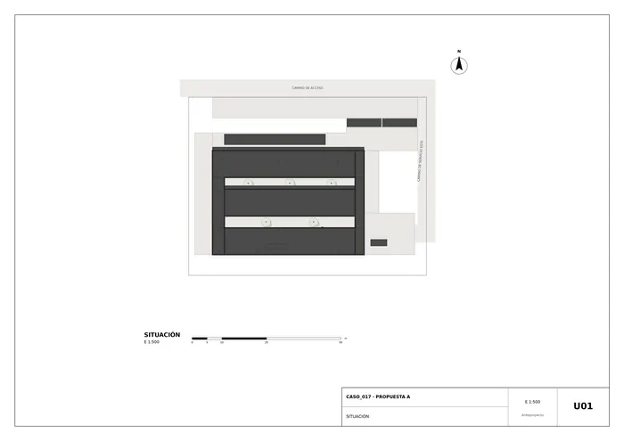
U01 · Situación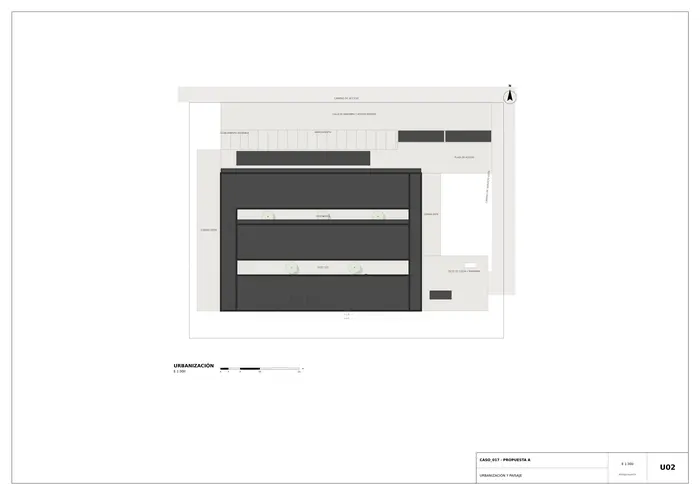
U02 · Urbanización y paisaje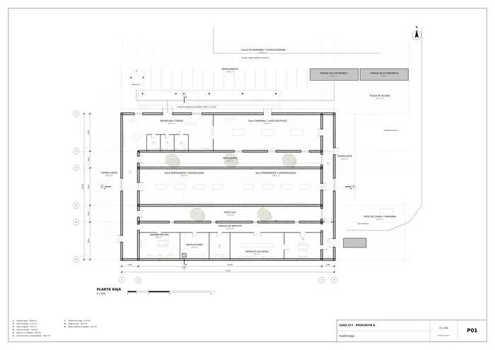
P01 · Planta baja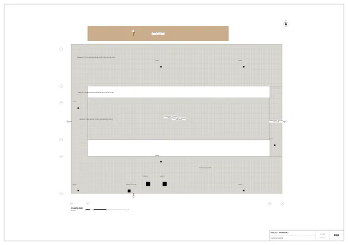
P02 · Planta de cubierta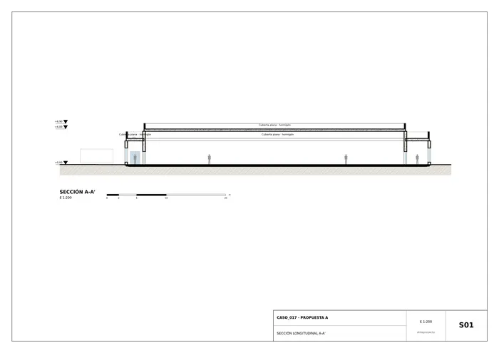
S01 · Sección longitudinal A-A'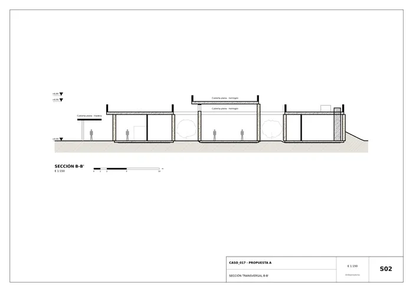
S02 · Sección transversal B-B'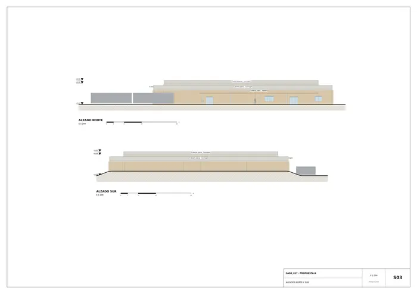
S03 · Alzados norte y sur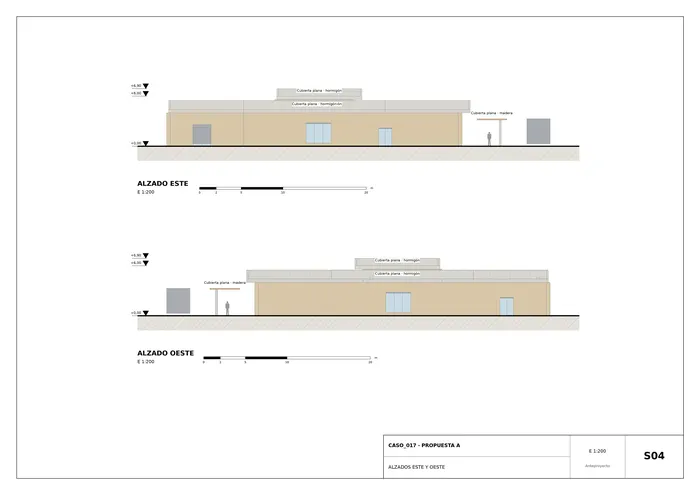
S04 · Alzados este y oeste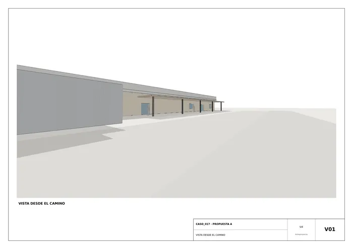
V01 · Vista desde el camino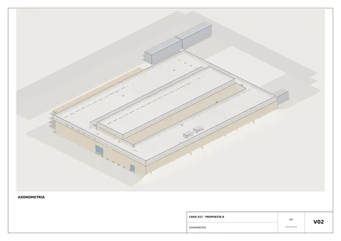
V02 · Axonometría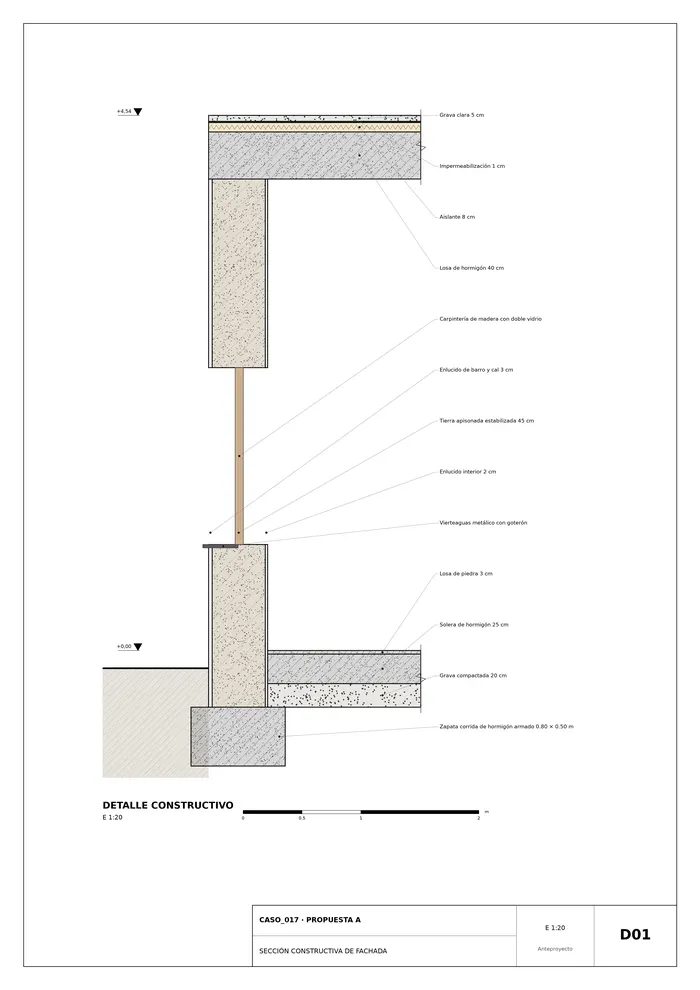
D01 · Sección constructiva de fachadaMemoria de la propuesta tal como la entregó el sistema. Se han omitido las notas internas del proceso (revisiones, control de reconocimiento y referencias a archivos de trabajo).